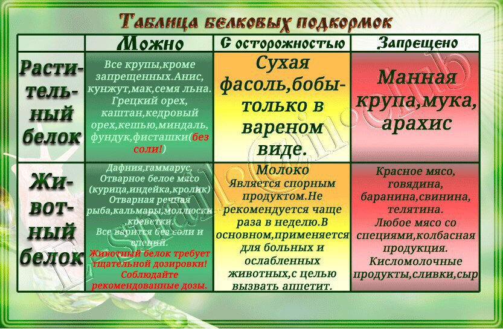
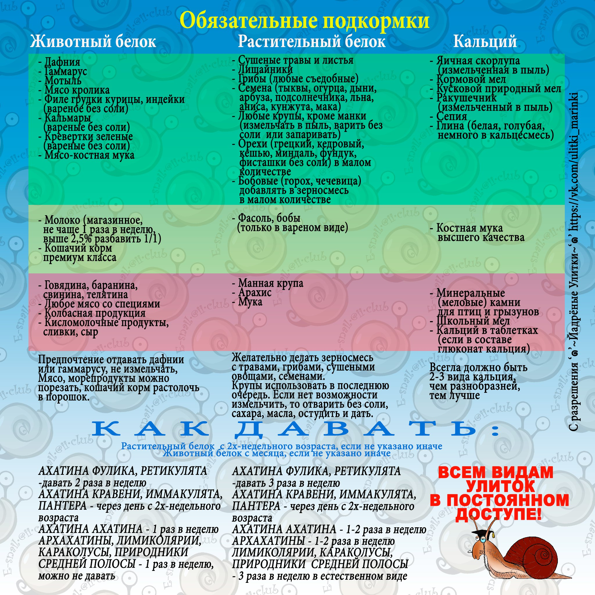
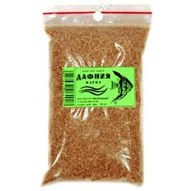
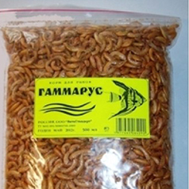

Питание и подкормки.
- ПИТАНИЕ
РАЗРЕШЕННЫЕ ПРОДУКТЫ
кабачок,
тыква,
помидор,
огурец (с ним лучше не перебарщивать, улитки его очень любят, но при частом кормлении и не соблюдении разнообразного рациона вызывает привыкание),
банан (так же может вызвать привыкание),
арбуз,
дыня,
болгарский перец,
брокколи,
кукуруза свежая,
капуста всех сортов,
свекла,
цуккини,
морковь,
любые съедобные грибы (сухие и свежие, не чаще 1-2 раз в неделю, в качестве белка),
не кислые ягоды и яблоки/груши.
Из зелени можно укроп, салат, петрушку, сорные травы, такие как одуванчки, подорожник, лопух, мокрица, крапива и т.д.
Можно давать пророщенный овес, ботву свеклы, моркови, редиски, ростки тыквы.
Сухофрукты можно только своего приготовления, магазинные и рыночные обрабатывают для хранения.
НЕЛЬЗЯ УЛИТКАМ НИКАКУЮ ЧЕЛОВЕЧЕСКУЮ ПИЩУ СО СВОЕГО СТОЛА.
КАТЕГОРИЧЕСКИ НЕЛЬЗЯ СОЛЕНОЕ, ЖАРЕННОЕ, КИСЛОЕ. ТО ЕСТЬ, К ПРИМЕРУ, НЕЛЬЗЯ АНАНАС, ЦИТРУСОВЫЕ (за исключением сладкого мандарина, немного), КИВИ (за исключением очень сладкого, немного) и т. д.
Нельзя горькие овощи вроде редьки, редиса, нельзя ни в каком виде картофель, мучные продукты и т.д.
Еду давать только в пластиковых тарелках, НЕ класть в фарфоровые, стеклянные, железные миски. (см выше)
Разберем тему цитрусовых подробнее:
Почему нельзя цитрусовые улиткам, как и все продукты содержащие кислоту?
Проведём эксперимент: возьмём к примеру лимон и посыпаем кормовым мелом. Произойдёт реакция с выделением газа - мел начнёт шипеть и пузыриться (Реакция карбоната кальция с лимонной кислотой): CaCO3 + C6H8O7 = CaC6H6O7 + CO2 + H2O). Что в итоге - эта реакция произойдя в теле у моллюска раздует все внутренние органы, затем выпадение их и незамедлительная смерть улитки. Чем больше кислотность - тем сильнее реакция.
Делаем выводы - опасна не сама кислота, а кислота в реакции с кальциевыми подкормками, без которых улитка обходиться не может.
Материалы по поводу реакций на кислые продукты: https://vk.com/wall-103463336_47364
- ПОДКОРМКИ.
В Связи с тем, что наши улитки оторваны от окружающей среды , нам (улитководам) необходимо искусственным путём дополнять рацион питания такими подкормками как кальций, животный и растительный белок. Они предназначены для поддержания здорового образа жизни моллюска. Конечно, кальций и белок попадают в организм с пищей, но нужно понимать, что их количество в ней не соответствует необходимому уровню.
Проблемы связанные с недостатком кальция\белка:
1) Снижение роста.
2) Низкая регенерация. Например,сломанный прирост раковины или же трещина, с отсутствием подкормок процесс "заживления" раковины уменьшается.
3) Погрызы себя и соседей. Недостаток кальция заставляет улитку искать его самой. Что может быть лучше, чем раковина соседа по террариуму? Так же улитка может грызть свою же раковину и ногу, восполняя недостаток подкормок
4) Проблемы с кладкой яиц. Всем известно,что для формирования яиц организму улитки необходим кальций . Его отсутствие снижает качество кладки и здоровье беременной улитки.
Хотите здорового и красивого питомца - обеспечивайте его всем необходимым.
 |
 |
КАЛЬЦИЙ.
Его представителями являются: природный (кормовой) мел, яичная скорлупа (но от одной скорлупы толку мало, идет только в дополнение к основным источникам!), ракушечник, сепия (панцирь каракатицы). Всё перечисленное необходимо перетереть в пыль. Это делается для того, чтобы ваш питомец лучше усваивал его и не порезал внутренние органы.
Сепию можно класть так же в терр просто куском, но необходимо проверять, не соленая ли она. Если чувствуется соль, необходимо 2-3 часа вымочить ее в холодной воде (несколько раз меняя воду), просушить и положить в террариум.
Кальций должен присутствовать в терре в отдельной миске, в постоянном доступе или же лежать просто куском, чтоб улитка могла в любое время восполнить недостающие его запасы в организме.
Необходимо помнить, что для усвоения кальция улиткам необходим витамин D.
Его можно предоставить улитке в виде пищи (в основном это зелень: одуванчик, крапива, салат, укроп, петрушка, лопух и др.) Так же витамин есть в таких продуктах, как помидоры, морковь, нежирная рыба (давать в очень маленьких количествах и в отварном виде без соли, в дни животного белка), грибах (даётся как в сыром, так и в отварном виде, не чаще раза-двух в неделю).
БЕЛОК
ДОЗИРОВКА
Для чего нужно дозировать белок? При избытке белка у улиток происходит БЕЛКОВОЕ ОТРАВЛЕНИЕ и, как следствие, опухание ноги до чудовищных размеров. Если вовремя не принять меры при переедании белка, улитке грозит смерть.
Животный белок. Дафния ИЛИ гаммарус, 2 - 3 раза в неделю
Дафния - по 1 чайной ложке на одну взрослую особь.
Гаммарус - 6-7 рачков на одну взрослую особь. Количество рачков регулируется в зависимости от возраста.
Так же в качестве животного белка можно давать не жирное мясо, рыбу без соли и специй, по чуть-чуть не чаще раза в неделю. Только отварные.
 |
 |
Растительный белок (помолы круп (кроме манки) и грибы)
По чайной ложке, в свободные от животного белка дни. Взрослым особям можно устраивать безбелковые дни 1-2 раза в неделю.
Крупы дают как в измельчённом сухом виде, так и в варёном/запаренном без соли и специей.
Помимо круп можно добавить семя льна, сушёные грибы и фрукты (собственной сушки, не покупные сухофрукты), различные виды лишайников, разрешённые травы, кунжут (но немного), орехи, (исключая арахис, тоже в небольшом количестве, так как очень калорийные и тяжёлые), отруби. Так же очень любят использовать хлопья "5 злаков" и др. Главное, все хорошенько промолоть и не допускать порчи продукта, хранить в закрытых ёмкостях.
ВАЖНО давать ВСЕ виды белка, то есть и животный, и растительный.
Внимание! Полудревесным видам животный белок нельзя!
ЯЙЦА ДАВАТЬ НЕЛЬЗЯ! ТОЛЬКО СКОРЛУПУ ОТ ЯИЦ МОЖНО ПЕРЕМАЛЫВАТЬ В СМЕСЬ, БЕЛОК ЯИЦ УЛИТКАМ ВРЕДЕН И ОПАСЕН!